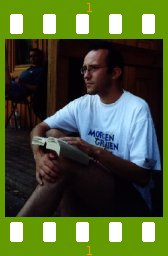

People of openSUSE: Marcus Meissner

As a Christmas gift we present you Marcus Meissner – the teamlead of the SUSE Security Team, Wine and gPhoto coder and also packager. Keep reading!
The ‘People of openSUSE’ team wishes you a Merry Christmas!
- Nickname: Marcus
- Homepage: http://en.opensuse.org/User:Msmeissn
- Blog: http://marcusmeissner.livejournal.com/
- Favorite season: Spring
- Motto: Alles wird gut! (english: “Everything will turn out well”, a common SUSE saying.)
Please introduce yourself!
I was born in May 1973 in Lutherstadt Wittenberg in the eastern part of Germany and grew up in a small village near there.
After school I moved to Erlangen to study computer science at its university and finished it in 1997 as “Diplom Informatiker”.
After one year of civil duty I started working at the engineering office of Caldera (a former Linux distributor) in Erlangen. As that office was closed down in 2002 I moved with several other Caldera fellows to work for SUSE in Nuernberg.
For SUSE I work as Teamlead of the SUSE Security Team, which is taking care of all SUSE Linux Security issues. I also maintain various packages, foremost Wine and gphoto related packages.
I now live in Nuernberg, am single without children, and the only pets I own are stuffed toys, mostly penguins.
In my sparetime I like to walk around the city, go fast on my inline skates and learn how to take good pictures.
Tell us about the background to your computer use.
The first computer I used was a Robotron KC 85/2 at our school, a 8bit Z80 clone. First some BASIC programming, but pretty soon we programmed in HiSoft Pascal and then directly in Assembler. Also worked on some CPM based computers too during my schooltime and learned Turbopascal there.
My first privately owned computer was a Sinclair QL, however pretty fast replaced by a Intel 386sx16 based machine and then onwards with growing RAM, CPU speed, etc. Currently I own 1 AMD64 workstation and 1 Laptop, and use them for going online, programming, and storing images and music.
At university I had my first contact with UNIX machines (on HPs and Sun mostly) and also got convinced to use Linux at home, which I picked up pretty soon and have never let go.
My Opensource programming career started with the Windows Emulator Wine and now also includes gPhoto and some other small projects.
When and why did you start using openSUSE/SUSE Linux?
My first SUSE was S.u.S.E. Linux 4.2 which I got complimentary for my Wine work. I used SUSE Linux until starting to work with Caldera, where I switched to Calderas OpenLinux. I switched back again to SUSE Linux 8.0 when I started to work for SUSE.
When did you join the openSUSE community and what made you do that?
I kind of automatically joined with the rest of the SUSE development team, since we all are members of it.
I participated in the SUSE community already, if you count the external mailing lists which have existed for quite some time already.
In what way do you participate in the openSUSE project?
First of most by my day job, being the teamlead of the SUSE Security team. “We keep your system secure.” :)
You will also find me active on the opensuse mailinglists, occasionaly active in IRC and active in Bugzilla outside of my bugs.
I also maintain the GPhoto and Emulators:Wine repositories in the openSUSE buildservice to provide you with latest versions of those packages.
What especially motivates you to participate in the openSUSE project?
I am getting paid for the day job of course, but it is also fun getting things done, bugs fixed, features implemented and generally helping users to be happy.
What do you think was your most important contribution to the openSUSE project/community or what is the contribution that you’re most proud of?
The good security work, and working digital camera support out of the box since 2002.
When do you usually spend time on the openSUSE project?
Over the whole day, everytime I am sitting at a computer basically.
Three words to describe openSUSE? Or make up a proper slogan!
I have the old SUSE one: “Have a lot of fun!” I think it still fits today.
What do you think is missing or underrated in the distribution or the project?
That we are not number one :)
Joke aside, what is missing in my eyes is that we cannot include all packages to make users happy, namely Media Codecs and Device Drivers. This is annoying for users and so is annoying for me.
That openSUSE is still perceived to be tainted by Microsoft is also bad.
What do you think the future holds for the openSUSE project?
No idea. I will however try to make it secure.
A person asks you why he/she should choose openSUSE instead of other distribution/OS. What would be your arguments to convince him/her to pick up openSUSE?
Because I work there, and we are the best.
Which members of the openSUSE community have you met in person?
Most of the Novell/SUSE employees (not all of the Ximian ones though), various community members during FOSDEM 2006 and LinuxTag 2007.
How many icons are currently on your desktop?
The ones on the desktop are all covered by an xterm running screen and I never click on them.
But in the lower taskbar of KDE I currently see: 1 Geeko icon for the kickoff menu, 1 weather Icon from kweather, the window icons in the taskbar, and 9 system tray icons.
What is the application you can’t live without? And why?
I don’t think I can pinpoint one application.
There is quite a number of programs and applications I cannot live without… xterm, the textbased tools, vi, irssi, gphoto2, and the graphical ones konqueror, akregator, kopete and mor
Which application or feature should be invented as soon as possible?
If I would know that I would do it and join the dotcom 2.0 bubble. :-)
Which is your preferred text editor? And why?
vi
I learned it in the old UNIX days (in 1991) and I still like the fast typing without taking the hands off the keyboard.
Which famous person would you want to join the openSUSE community?
Thats a strange question, because the person should want to join the community, not someone else.
I would like to see more of my colleagues involved better with the community though.
Which computer related skills would you like to have?
More understanding of global design issues, more creativity to implement better designs and more energy to do so.
The Internet crashes for a whole week. How would you feel, what would you do?
I would feel a bit lost.
I would go outside, phone friends and colleagues to go out partying, read books, watch DVDs…
Which is your favorite movie scene?
Lord of the Rings: Fellowship of the Rings, the long one where they escape over the falling bridge of Khaza-dum.
Star Trek or Star Wars?
I wonder how you can compare a hundreds of TV episodes + 10 movies franchise with a 6 movie franchise.
I like both actually and I always wanted to be Han Solo. :)
What is your favorite food and drink?
No favorite food, Coffee.
Favorite game or console (in your childhood and nowadays)?
In my childhood … the Wing Commander series.
Todays I own a Nintendo Wii and like the Golf style games, but am not regulary playing.
Which city would you like to visit?
There are quite a lot of them, foremost London, Dublin, Paris, Rome…
What is your preferred way to spend your vacation?
A 50/50 mix between relaxing and sightseeing.
Someone gives you $1.000.000. What would you do with the money?
Buy a house just outside of town with garden + farm animals, keep on working on Opensource stuff and/or parttime for SUSE.
If traveling through time was possible, when would we be most likely to meet you?
The timetraveling scientist knows the future to be pretty unpredictable so he would just visit, pick up some goodies and return to the present.
So: The present.
There’s a thunderstorm outside. Do you turn off your computer?
No. But I will go and watch the pretty lights.
Have your ever missed an appointment because you forgot about it while sitting at your computer?
Not that I remember.
Show us a picture of something, you have always wanted to share!
I haven’t one.
You couldn’t live without…
My friends, the internet…
Which question was the hardest to answer?
The one about the picture I always wanted to share.
What other question would you like to answer? And what would you answer?
None at the moment.